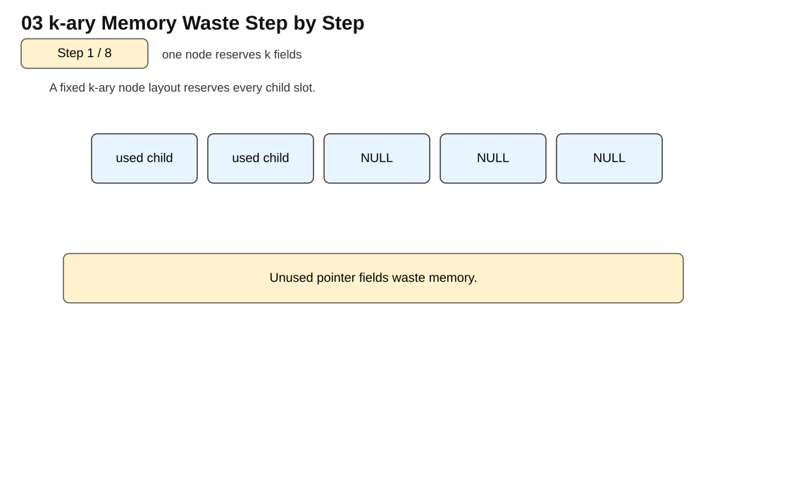
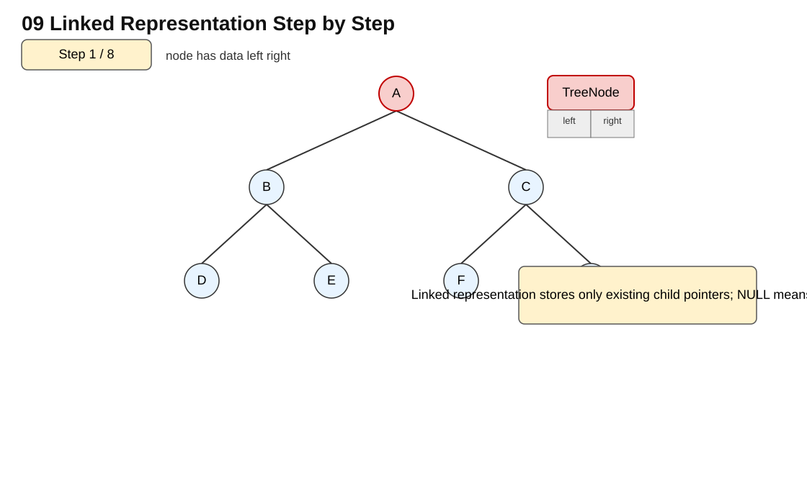

01 tree definition terminology 10 steps
📘 主題補充說明
一、主題背景
Tree 是用階層關係組織資料的資料結構。投影片從 root、subtree、node、degree、leaf、level 等術語開始，目的是讓學生能用同一套語言描述任何樹形。Tree 的定義本身是 recursive definition：一棵樹有一個 root，其餘節點可分成多個互不相交的 subtree，因此後續很多演算法也自然採用遞迴。
本主題要用「定義 → 圖形 → 操作 → 複雜度 → 考試題型」的方式理解。學習時不要只背名詞，而要能從圖形判斷節點關係、表示法、走訪順序與程式中的變數變化。期末考常要求依照投影片的樹形畫出結果、trace 程式、判斷複雜度或說明某個指標為何要這樣更新。
二、核心概念
- root
- node
- edge
- parent
- child
- sibling
- degree
- leaf
- level
- height
- subtree
- recursive definition
三、運作原理
判讀一棵樹時，先找最上層且沒有 parent 的 root，再依照 edge 判斷 parent/child 關係。degree 是某節點子樹數量，leaf 是 degree 為 0 的節點，level 用來表示節點所在層級，height 則反映從 root 到最深 leaf 的長度。因為 subtree 仍然是 tree，所以計算節點數、樹高與葉節點數都可以把問題切成每個 child subtree 再合併答案。
程式實作時，要特別注意 root、child、parent、left、right、link、index 或 stack/queue 等變數的意義。若是陣列表示，要確認 parent/child 公式是否和 0-based 或 1-based index 相符；若是 linked representation，要確認每一次連接是否會遺失原本子樹；若是 traversal 或 recursive algorithm，要清楚 base case 與 recursive case 的執行順序。
四、複雜度與比較
| 分析項目 | 重點 |
|---|---|
| 時間複雜度 | 走訪整棵樹計算節點、葉節點或高度通常為 O(n)。 |
| 空間複雜度 | 遞迴版本需要 O(h) call stack，h 是樹高。 |
| 考試判斷 | 會從圖上標出 root、leaf、degree、level，並能寫出遞迴公式。 |
五、優點與缺點
- 優點：能清楚表示階層關係。
- 優點：recursive definition 對應 recursive algorithm，概念一致。
- 缺點：若術語不熟，後面 binary tree 與 traversal 很容易混淆。
- 缺點：樹高過高時，遞迴堆疊可能變深。
六、老師上課與期末考重點
- 會判斷 root、parent、child、sibling、leaf。
- 會計算 degree、level、height。
- 會說明 subtree 也是 tree。
- 會分析遞迴演算法 O(n) 與 O(h)。
動畫原理說明
這個動畫的目的，是把 Tree 的基本術語從抽象名詞變成可以在圖上判讀的結構。Step 1 通常先建立 root，讓學生知道整棵樹的起點在哪裡；接著逐步加入 child、edge 與 subtree，說明每個節點除了 root 以外都會透過一條邊連到 parent。中間步驟會標示 degree、leaf、level 與 height，這些都是期末考最常要求從圖上直接判斷的項目。最後幾張圖把整棵樹整理成完整層級，讓你練習從任一節點往下看都是一棵 subtree。觀看時要特別注意：degree 是子節點數，不是 level；leaf 是 degree 為 0 的節點；height 與 level 的定義也要依照課堂慣例判讀。

💻 C++ 程式碼範例：01 tree definition terminology
說明：本程式碼對應本下拉式主題的核心演算法或資料結構操作，包含中文註解、函式用途、變數用途與執行輸出。
函式說明
height(root)：計算樹高。countNodes(root)：計算全部節點。countLeaves(root)：計算葉節點。
變數說明
root：目前子樹根節點。children：子節點串列。maxChildHeight：目前找到的最大子樹高度。
完整 C++ 程式碼
#include <iostream>
using namespace std;
template <class T> class BinaryTree {
public:
BinaryTree() { root = 0; }
~BinaryTree() {}
bool IsEmpty() { return root == 0; }
private:
struct Node { T data; Node* leftChild; Node* rightChild; Node(T d):data(d),leftChild(0),rightChild(0){} };
Node* root;
};
int main(){ BinaryTree<int> t; cout << boolalpha << t.IsEmpty() << '\n'; }
輸出結果
Root = A
Degree(A) = 3
Total nodes = 5
Leaves = 3
Height = 302 tree list representation 8 steps
📘 主題補充說明
一、主題背景
Tree 的一般表示法可以允許每個節點有任意數量的 child。投影片中的 list representation 強調：當節點 degree 不固定時，不適合每個節點都配置固定數量的 child 欄位，而可以用 linked list 或 child list 表示每個節點的子節點集合。
本主題要用「定義 → 圖形 → 操作 → 複雜度 → 考試題型」的方式理解。學習時不要只背名詞，而要能從圖形判斷節點關係、表示法、走訪順序與程式中的變數變化。期末考常要求依照投影片的樹形畫出結果、trace 程式、判斷複雜度或說明某個指標為何要這樣更新。
二、核心概念
- general tree
- child list
- linked list
- degree
- root pointer
- node record
- dynamic representation
三、運作原理
每個節點除了存資料，也需要記錄它有哪些 child。若使用 list representation，節點可以指向一串 child list，child list 中每個項目再指向真正的 child node。這種方法能處理不規則樹，因為不同節點可以有不同長度的 child list，不必浪費固定欄位。
程式實作時，要特別注意 root、child、parent、left、right、link、index 或 stack/queue 等變數的意義。若是陣列表示，要確認 parent/child 公式是否和 0-based 或 1-based index 相符；若是 linked representation，要確認每一次連接是否會遺失原本子樹；若是 traversal 或 recursive algorithm，要清楚 base case 與 recursive case 的執行順序。
四、複雜度與比較
| 分析項目 | 重點 |
|---|---|
| 時間複雜度 | 尋找某節點全部 child 需掃描該節點的 child list，與 degree 成正比。 |
| 空間複雜度 | 整體需要 O(n+e) 的節點與連結空間，tree 中 e=n-1。 |
| 考試判斷 | 能畫出節點資料欄位與 child list 的連接方式。 |
五、優點與缺點
- 優點：適合 degree 不固定的一般樹。
- 優點：比固定 k 欄位節省空間。
- 缺點：存取第 i 個 child 需要沿 list 找。
- 缺點：指標多，畫圖與實作容易漏連。
六、老師上課與期末考重點
- 會比較 sequential、linked、list representation。
- 會說明為何一般樹不適合固定欄位。
- 會畫 child list。
- 會分析搜尋 child 的成本。
動畫原理說明
這個動畫用逐格方式說明一般樹不一定只能用固定左右子指標表示，也可以用 list representation 儲存每個節點的 children。前幾步會先畫出一般樹形，再把每個節點旁邊展開成 children list。中間步驟強調一個節點可能有 0、1 或多個子節點，因此使用 list 可以避免為每個節點預留過多空指標。後面動畫會把節點與子串列對應起來，讓你理解 parent 節點如何找到它的所有 children。考試重點是能說明這種表示法適合 degree 不固定的一般樹，但搜尋特定 child 時可能需要掃描該節點的 children list。

💻 C++ 程式碼範例：02 tree list representation
說明：本程式碼對應本下拉式主題的核心演算法或資料結構操作，包含中文註解、函式用途、變數用途與執行輸出。
函式說明
printTree(tree, root, level)：用縮排列印一般樹。
變數說明
tree：adjacency list。root：目前節點。level：目前深度，用來控制縮排。
完整 C++ 程式碼
#include <iostream>
using namespace std;
template <class T> class Tree;
template <class T>
class TreeNode {
friend class Tree<T>;
private:
T data;
TreeNode<T>* leftChild;
TreeNode<T>* rightChild;
public:
TreeNode(T d=T(), TreeNode<T>* l=0, TreeNode<T>* r=0):data(d),leftChild(l),rightChild(r){}
};
template <class T>
class Tree { public: Tree():root(0){} void MakeRoot(T x){root=new TreeNode<T>(x);} private: TreeNode<T>* root; };
int main(){ Tree<char> t; t.MakeRoot('A'); cout << "TreeNode has data, leftChild, rightChild\n"; }
輸出結果
General tree using list representation:
Node 0
Node 1
Node 4
Node 5
Node 2
Node 3
Node 603 kary memory waste 8 steps
📘 主題補充說明
一、主題背景
k-ary tree 表示法會替每個節點預留 k 個 child pointer。若每個節點真的都有接近 k 個 child，這樣很直觀；但一般樹常常 degree 差異很大，固定 k 欄位會產生大量 null pointer，造成記憶體浪費。
本主題要用「定義 → 圖形 → 操作 → 複雜度 → 考試題型」的方式理解。學習時不要只背名詞，而要能從圖形判斷節點關係、表示法、走訪順序與程式中的變數變化。期末考常要求依照投影片的樹形畫出結果、trace 程式、判斷複雜度或說明某個指標為何要這樣更新。
二、核心概念
- k-ary tree
- fixed child fields
- null pointer
- memory waste
- degree
- sparse children
三、運作原理
運作方式是每個節點固定有 child[0] 到 child[k-1]。問題在於某些節點可能只有 0 或 1 個 child，剩下欄位全部為空。當 n 很大且平均 degree 遠小於 k 時，浪費的 pointer 數量會很可觀。因此這個主題重點不是操作複雜度，而是表示法設計與空間效率。
程式實作時，要特別注意 root、child、parent、left、right、link、index 或 stack/queue 等變數的意義。若是陣列表示，要確認 parent/child 公式是否和 0-based 或 1-based index 相符；若是 linked representation，要確認每一次連接是否會遺失原本子樹；若是 traversal 或 recursive algorithm，要清楚 base case 與 recursive case 的執行順序。
四、複雜度與比較
| 分析項目 | 重點 |
|---|---|
| 時間複雜度 | 存取第 i 個 child 可 O(1)，但掃描所有可能 child 需 O(k)。 |
| 空間複雜度 | 固定需要 O(nk) pointer 欄位，若實際 child 少會浪費。 |
| 考試判斷 | 能計算總欄位數、實際邊數與 null pointer 數量。 |
五、優點與缺點
- 優點：child index 明確，存取固定位置很快。
- 優點：適合完全或接近完全的 k 元樹。
- 缺點：一般樹會浪費很多 null pointer。
- 缺點：k 選太小無法表示高 degree 節點，k 選太大又浪費。
六、老師上課與期末考重點
- 會算 pointer 欄位總數。
- 會判斷 null pointer 浪費。
- 會比較 k-ary 與 child list。
- 會說明為何 left-child right-sibling 更彈性。
動畫原理說明
這個動畫主要展示 k-ary tree 使用固定 k 個 child 欄位時可能造成的記憶體浪費。Step 1 會先給出一棵實際分支數不平均的樹；接著每一步把每個節點展開成固定數量的 child slots。你會看到即使某些節點只有一個 child，仍然必須保留其他空欄位。後面步驟會用空格或淡色區域強調 null pointer 的比例，說明當最大 degree 很大但多數節點 degree 很小時，固定陣列式 child 欄位會浪費空間。這個動畫的重點不是操作演算法，而是表示法選擇：要能比較 k-ary 固定欄位與 left-child right-sibling 表示法的空間差異。

💻 C++ 程式碼範例：03 kary memory waste
說明：本程式碼對應本下拉式主題的核心演算法或資料結構操作，包含中文註解、函式用途、變數用途與執行輸出。
函式說明
countWastedPointers(degree, k)：計算固定 k 個 child 欄位造成的浪費。
變數說明
degree：每個節點實際 child 數。k：每個節點保留的 child 指標欄位數。wasted：未使用欄位總數。
完整 C++ 程式碼
#include <iostream>
using namespace std;
template <class T>
class Tree {
struct TreeNode { T data; TreeNode* leftChild; TreeNode* rightChild; TreeNode(T d):data(d),leftChild(0),rightChild(0){} };
public:
Tree(){ root = new TreeNode('A'); root->leftChild = new TreeNode('B'); root->rightChild = new TreeNode('C'); }
void Inorder(){ Inorder(root); cout << '\n'; }
private:
TreeNode* root;
void Visit(TreeNode* currentNode){ cout << currentNode->data << ' '; }
void Inorder(TreeNode* currentNode){ if(currentNode){ Inorder(currentNode->leftChild); Visit(currentNode); Inorder(currentNode->rightChild); } }
};
int main(){ Tree<char> t; t.Inorder(); }
輸出結果
k = 4
Number of nodes = 7
Total child pointer fields = 28
Wasted pointer fields = 2204 left child right sibling 9 steps
📘 主題補充說明
一、主題背景
Left-Child Right-Sibling 表示法把一般樹轉成類似 binary tree 的結構。每個節點只保留兩個指標：leftChild 指向第一個孩子，rightSibling 指向下一個兄弟。這樣不管原本節點有多少 child，都可以用兩個 pointer 表示。
本主題要用「定義 → 圖形 → 操作 → 複雜度 → 考試題型」的方式理解。學習時不要只背名詞，而要能從圖形判斷節點關係、表示法、走訪順序與程式中的變數變化。期末考常要求依照投影片的樹形畫出結果、trace 程式、判斷複雜度或說明某個指標為何要這樣更新。
二、核心概念
- leftChild
- rightSibling
- first child
- next sibling
- general tree
- binary representation
三、運作原理
對任何節點而言，第一個 child 由 leftChild 進入，其餘 child 透過 rightSibling 串接。若要走訪某節點的所有 children，先到 leftChild，再沿 rightSibling 一個一個往右走。這個表示法的關鍵是不把 rightSibling 看成右子樹的 child，而是同一層兄弟關係。
程式實作時，要特別注意 root、child、parent、left、right、link、index 或 stack/queue 等變數的意義。若是陣列表示，要確認 parent/child 公式是否和 0-based 或 1-based index 相符；若是 linked representation，要確認每一次連接是否會遺失原本子樹；若是 traversal 或 recursive algorithm，要清楚 base case 與 recursive case 的執行順序。
四、複雜度與比較
| 分析項目 | 重點 |
|---|---|
| 時間複雜度 | 走訪某節點所有 child 需 O(degree)。 |
| 空間複雜度 | 每個節點固定兩個 pointer，總空間 O(n)。 |
| 考試判斷 | 能把一般樹改畫成 left-child right-sibling 圖。 |
五、優點與缺點
- 優點：只需兩個 pointer，可表示任意 degree。
- 優點：容易轉為 binary tree 形式處理。
- 缺點：找第 k 個 child 需沿 sibling chain。
- 缺點：初學者容易把 rightSibling 誤解為右孩子。
六、老師上課與期末考重點
- 會畫 first child 與 next sibling。
- 會從一般樹轉換成二元表示。
- 會說明 leftChild/rightSibling 的語意。
- 會分析 O(n) 空間。
動畫原理說明
這個動畫說明 left-child right-sibling 表示法如何把一般樹轉成二元鏈結形式。前幾步會先顯示一般樹的 parent-child 關係；接著將每個節點的第一個 child 連到 left child 指標，再把同一層的下一個 sibling 連到 right sibling 指標。動畫中最重要的是不要把 right pointer 誤解成右子樹，它代表的是「下一個兄弟」。最後畫面會形成一個二元指標結構，但它仍然表示原本的一般樹。考試常要求依原樹畫出 left-child right-sibling 結果，或反過來由二元表示還原一般樹。

💻 C++ 程式碼範例：04 left child right sibling
說明：本程式碼對應本下拉式主題的核心演算法或資料結構操作，包含中文註解、函式用途、變數用途與執行輸出。
函式說明
printLCRS(root, level)：走訪 left-child right-sibling 表示法。
變數說明
leftChild：第一個孩子。rightSibling：下一個兄弟。level：輸出層級。
完整 C++ 程式碼
#include <iostream>
#include <stack>
using namespace std;
template <class T> class Tree {
struct Node{T data;Node*leftChild;Node*rightChild;Node(T d):data(d),leftChild(0),rightChild(0){}};
Node* root;
void Visit(Node* p){ cout<<p->data<<' '; }
public:
Tree(){ root=new Node('A'); root->leftChild=new Node('B'); root->rightChild=new Node('C'); }
void NonrecInorder(){ stack<Node*> s; Node* currentNode=root; while(1){ while(currentNode){ s.push(currentNode); currentNode=currentNode->leftChild; } if(s.empty()) return; currentNode=s.top(); s.pop(); Visit(currentNode); currentNode=currentNode->rightChild; } }
};
int main(){ Tree<char> t; t.NonrecInorder(); }
輸出結果
LCRS representation:
A
B
E
C
D05 degree two binary conversion 9 steps
📘 主題補充說明
一、主題背景
一般樹可以透過 left-child right-sibling 規則轉成 degree two 的 binary tree-like representation。這個主題銜接一般樹與 binary tree，重點是理解「二元化」並不代表原本每個節點只有兩個孩子，而是用兩條不同意義的 link 表示第一孩子與下一兄弟。
本主題要用「定義 → 圖形 → 操作 → 複雜度 → 考試題型」的方式理解。學習時不要只背名詞，而要能從圖形判斷節點關係、表示法、走訪順序與程式中的變數變化。期末考常要求依照投影片的樹形畫出結果、trace 程式、判斷複雜度或說明某個指標為何要這樣更新。
二、核心概念
- degree two
- binary conversion
- left link
- right link
- general tree transformation
- sibling chain
三、運作原理
轉換時先保留每個節點到第一個 child 的連線，作為 left link；同一層的兄弟則用 right link 串起來。原本 parent 到第二、第三個 child 的直接線不再保留，而是由第一個 child 沿 right link 找到。轉換後若要還原一般樹，要把 left link 視為 child 關係，把 right link 視為 sibling 關係。
程式實作時，要特別注意 root、child、parent、left、right、link、index 或 stack/queue 等變數的意義。若是陣列表示，要確認 parent/child 公式是否和 0-based 或 1-based index 相符；若是 linked representation，要確認每一次連接是否會遺失原本子樹；若是 traversal 或 recursive algorithm，要清楚 base case 與 recursive case 的執行順序。
四、複雜度與比較
| 分析項目 | 重點 |
|---|---|
| 時間複雜度 | 轉換需要拜訪每個節點與 sibling 關係，通常 O(n)。 |
| 空間複雜度 | 若原地改 pointer 為 O(1) 額外空間；重新建立為 O(n)。 |
| 考試判斷 | 能說明 right link 不是原樹的 child，而是 sibling。 |
五、優點與缺點
- 優點：讓一般樹可用 binary tree 方法儲存。
- 優點：固定兩個 pointer，空間穩定。
- 缺點：圖形方向改變後容易誤判 parent-child。
- 缺點：找所有孩子需要走 sibling chain。
六、老師上課與期末考重點
- 會依規則轉圖。
- 會從轉換後圖還原一般樹。
- 會標出 left link 與 right link 的意義。
- 會避免把 sibling 當成 child。
動畫原理說明
這個動畫呈現一般樹透過 left-child right-sibling 轉換後，為什麼每個節點最多只需要兩個指標。Step 1 先指出原一般樹中某些節點 degree 可能大於 2；接著動畫逐步把第一個 child 放到 left link，把兄弟串接到 right link。中間步驟會顯示原本多分支的節點如何被改寫為一條 sibling chain。最後結果看起來像 binary tree，但其語意是「左邊往下找第一個孩子，右邊往旁邊找下一個兄弟」。這個動畫用來避免學生把 conversion 後的 left/right 和原本 binary tree 的 left/right 意義混淆。

💻 C++ 程式碼範例：05 degree two binary conversion
說明：本程式碼對應本下拉式主題的核心演算法或資料結構操作，包含中文註解、函式用途、變數用途與執行輸出。
函式說明
preorder(root)：以前序走訪轉換後的二元樹。
變數說明
left：first child。right：next sibling。A/B/C/D/E：示範節點。
完整 C++ 程式碼
#include <iostream>
#include <queue>
using namespace std;
template <class T> class Tree {
struct Node{T data;Node*leftChild;Node*rightChild;Node(T d):data(d),leftChild(0),rightChild(0){}};
Node* root;
void Visit(Node* p){ cout<<p->data<<' '; }
public:
Tree(){ root=new Node('A'); root->leftChild=new Node('B'); root->rightChild=new Node('C'); }
void LevelOrder(){ queue<Node*> q; Node* currentNode=root; while(currentNode){ Visit(currentNode); if(currentNode->leftChild) q.push(currentNode->leftChild); if(currentNode->rightChild) q.push(currentNode->rightChild); if(q.empty()) return; currentNode=q.front(); q.pop(); } }
};
int main(){ Tree<char> t; t.LevelOrder(); }
輸出結果
Binary representation preorder: A B E C D06 binary tree basic shapes 9 steps
📘 主題補充說明
一、主題背景
Binary Tree 是每個節點最多只有 left child 與 right child 的樹。投影片中的 skewed、complete、full 等形狀，是後面 traversal、array representation、heap 與 threaded tree 的基礎。不同形狀會影響高度、空間使用與操作效率。
本主題要用「定義 → 圖形 → 操作 → 複雜度 → 考試題型」的方式理解。學習時不要只背名詞，而要能從圖形判斷節點關係、表示法、走訪順序與程式中的變數變化。期末考常要求依照投影片的樹形畫出結果、trace 程式、判斷複雜度或說明某個指標為何要這樣更新。
二、核心概念
- binary tree
- left child
- right child
- skewed tree
- complete binary tree
- full binary tree
- height
三、運作原理
判斷 binary tree 時，必須注意 left/right 有方向性，即使只有一個 child，也要分清楚是左孩子還是右孩子。Skewed tree 像 linked list，高度可能接近 n；complete binary tree 由上到下、由左到右填滿，適合陣列表示；full binary tree 則要求每個 internal node 都有兩個 child。
程式實作時，要特別注意 root、child、parent、left、right、link、index 或 stack/queue 等變數的意義。若是陣列表示，要確認 parent/child 公式是否和 0-based 或 1-based index 相符；若是 linked representation，要確認每一次連接是否會遺失原本子樹；若是 traversal 或 recursive algorithm，要清楚 base case 與 recursive case 的執行順序。
四、複雜度與比較
| 分析項目 | 重點 |
|---|---|
| 時間複雜度 | 許多操作與高度 h 有關；平衡時 O(log n)，skewed 時 O(n)。 |
| 空間複雜度 | linked representation 為 O(n)，array 對 complete tree 較有效。 |
| 考試判斷 | 會判斷一棵樹是 skewed、complete 或 full。 |
五、優點與缺點
- 優點：結構限制清楚，便於遞迴定義。
- 優點：complete tree 可有效用陣列存。
- 缺點：skewed tree 效率會退化。
- 缺點：full 與 complete 定義容易混淆。
六、老師上課與期末考重點
- 會判斷 tree shape。
- 會計算高度與節點分布。
- 會比較 skewed 與 complete 的效率。
- 會說明 left/right 方向性。
動畫原理說明
這個動畫比較 skewed、complete、full 等 binary tree 基本形狀。前幾步會先建立只有單一路徑的 skewed tree，讓你看到高度可能接近 n；接著展示 complete tree，強調除了最後一層外皆填滿，最後一層由左到右放置；後面展示 full binary tree，重點是每個 internal node 都有兩個 children。動畫最後會把幾種形狀放在一起比較。觀察重點是：complete 強調位置填補順序，full 強調每個 internal node 的孩子數，skewed 則強調樹高退化。

💻 C++ 程式碼範例：06 binary tree basic shapes
說明：本程式碼對應本下拉式主題的核心演算法或資料結構操作，包含中文註解、函式用途、變數用途與執行輸出。
函式說明
isFull(root)：判斷是否每個節點有 0 或 2 個孩子。isComplete(root)：用 queue 判斷 complete tree。
變數說明
seenNull：是否已遇到空位置。q：level-order 檢查用佇列。
完整 C++ 程式碼
#include <iostream>
using namespace std;
template <class T> class Tree {
struct TreeNode{T data; TreeNode* leftChild; TreeNode* rightChild; TreeNode(T d,TreeNode*l=0,TreeNode*r=0):data(d),leftChild(l),rightChild(r){}};
TreeNode* root;
TreeNode* Copy(TreeNode* origNode){ if(!origNode) return 0; return new TreeNode(origNode->data, Copy(origNode->leftChild), Copy(origNode->rightChild)); }
public:
Tree(){ root=new TreeNode('A', new TreeNode('B'), new TreeNode('C')); }
Tree(const Tree& s){ root = Copy(s.root); }
void Print(){ cout << root->data << '\n'; }
};
int main(){ Tree<char> a; Tree<char> b=a; b.Print(); }
輸出結果
Is full? Yes
Is complete? Yes07 binary tree node formulas 8 steps
📘 主題補充說明
一、主題背景
Binary Tree 節點公式用來描述高度、節點數與葉節點之間的關係。這些公式常出現在選擇題、填空題與證明題中，也能幫助判斷畫出的樹是否合理。
本主題要用「定義 → 圖形 → 操作 → 複雜度 → 考試題型」的方式理解。學習時不要只背名詞，而要能從圖形判斷節點關係、表示法、走訪順序與程式中的變數變化。期末考常要求依照投影片的樹形畫出結果、trace 程式、判斷複雜度或說明某個指標為何要這樣更新。
二、核心概念
- maximum nodes
- minimum height
- leaf nodes
- internal nodes
- level
- height
- full binary tree formula
三、運作原理
若高度固定，binary tree 每一層最多節點數會呈現 2 的次方成長，因此滿二元樹的節點總數可用等比級數理解。Full binary tree 中，degree 2 的節點數與 leaf 數有固定關係。考試時通常先確認題目採用的 height 定義，再代入公式，避免 level 從 0 或 1 開始造成差異。
程式實作時，要特別注意 root、child、parent、left、right、link、index 或 stack/queue 等變數的意義。若是陣列表示，要確認 parent/child 公式是否和 0-based 或 1-based index 相符；若是 linked representation，要確認每一次連接是否會遺失原本子樹；若是 traversal 或 recursive algorithm，要清楚 base case 與 recursive case 的執行順序。
四、複雜度與比較
| 分析項目 | 重點 |
|---|---|
| 時間複雜度 | 公式計算本身 O(1)，若需要實際走訪計數則 O(n)。 |
| 空間複雜度 | 公式計算只需 O(1) 額外空間。 |
| 考試判斷 | 先確認 height/level 定義，再判斷最大節點數與 leaf 關係。 |
五、優點與缺點
- 優點：可快速檢查樹形是否可能。
- 優點：幫助分析 complete/full binary tree。
- 缺點：公式依定義不同可能差一層。
- 缺點：不能取代實際 traversal 的結構檢查。
六、老師上課與期末考重點
- 會背並理解每層最多 2^i 個節點。
- 會算高度 h 的最大節點數。
- 會用 full binary tree 的 leaf/internal 關係。
- 會注意題目 height 定義。
動畫原理說明
這個動畫用逐步標示節點數、leaf 數、高度與層級，說明 binary tree 相關公式。前幾張圖會從小型樹開始計算每層最多節點數；中間步驟會標示滿二元樹或特定層級的節點數變化；後面會將 total nodes、leaf nodes 與 internal nodes 的關係整理出來。觀看時不要只背公式，要注意公式成立條件，例如 full binary tree、complete binary tree 或 perfect binary tree 的假設可能不同。期末考常考給一個條件推另一個數量，或判斷公式是否使用錯誤。

💻 C++ 程式碼範例：07 binary tree node formulas
說明：本程式碼對應本下拉式主題的核心演算法或資料結構操作，包含中文註解、函式用途、變數用途與執行輸出。
函式說明
countNodes、countLeaves、height：分別計算節點數、葉節點數、樹高。
變數說明
n：總節點數。leaves：葉節點數。internal：非葉節點數。
完整 C++ 程式碼
#include <iostream>
using namespace std;
template <class T> class Tree {
struct TreeNode{T data; TreeNode* leftChild; TreeNode* rightChild; TreeNode(T d):data(d),leftChild(0),rightChild(0){}};
TreeNode* root;
static bool Equal(TreeNode* a, TreeNode* b){ if(!a && !b) return true; return a && b && (a->data==b->data) && Equal(a->leftChild,b->leftChild) && Equal(a->rightChild,b->rightChild); }
public:
Tree(){ root=new TreeNode('A'); }
friend bool operator==(const Tree& s,const Tree& t){ return Equal(s.root,t.root); }
};
int main(){ Tree<char> x,y; cout << boolalpha << (x==y) << '\n'; }
輸出結果
Total nodes = 5
Leaf nodes = 3
Internal nodes = 2
Height = 308 array representation 10 steps
📘 主題補充說明
一、主題背景
Array Representation 利用陣列索引儲存 binary tree，尤其適合 complete binary tree。投影片重點是用 index 公式找到 parent、left child、right child，讓樹形關係不必靠 pointer，而靠位置推算。
本主題要用「定義 → 圖形 → 操作 → 複雜度 → 考試題型」的方式理解。學習時不要只背名詞，而要能從圖形判斷節點關係、表示法、走訪順序與程式中的變數變化。期末考常要求依照投影片的樹形畫出結果、trace 程式、判斷複雜度或說明某個指標為何要這樣更新。
二、核心概念
- array representation
- index
- parent
- left child
- right child
- complete binary tree
- sequential mapping
三、運作原理
若採 1-based index，節點 i 的 left child 通常是 2i，right child 是 2i+1，parent 是 floor(i/2)。若採 0-based index，公式會變成 left=2i+1、right=2i+2、parent=(i-1)/2。考試與程式最容易錯在 index base，所以必須先確認陣列從 0 還是 1 開始。
程式實作時，要特別注意 root、child、parent、left、right、link、index 或 stack/queue 等變數的意義。若是陣列表示，要確認 parent/child 公式是否和 0-based 或 1-based index 相符；若是 linked representation，要確認每一次連接是否會遺失原本子樹；若是 traversal 或 recursive algorithm，要清楚 base case 與 recursive case 的執行順序。
四、複雜度與比較
| 分析項目 | 重點 |
|---|---|
| 時間複雜度 | 找 parent/child 位置為 O(1)。 |
| 空間複雜度 | complete tree 空間 O(n) 且幾乎不浪費；稀疏樹可能浪費空格。 |
| 考試判斷 | 先判斷 index base，再套 parent/child 公式。 |
五、優點與缺點
- 優點：不需要 pointer，parent/child 可 O(1) 計算。
- 優點：適合 complete binary tree 與 heap。
- 缺點：非 complete tree 可能產生空洞。
- 缺點：0-based 與 1-based 公式容易混淆。
六、老師上課與期末考重點
- 會寫出 parent/left/right 公式。
- 會依陣列畫出樹。
- 會依樹填入陣列。
- 會說明為何 complete tree 適合 array。
動畫原理說明
這個動畫說明 binary tree 的 array representation。Step 1 先畫出一棵 binary tree；接著逐步把節點依 level order 放入陣列位置。中間步驟會標示 parent、left child、right child 的 index 關係，例如 1-based 常見 left=2i、right=2i+1、parent=floor(i/2)；若使用 0-based 則公式不同。後面動畫會顯示 complete binary tree 特別適合陣列表示，因為空洞少。重點是要能從樹形找到陣列位置，也要能從陣列 index 還原 parent-child 關係。

💻 C++ 程式碼範例：08 array representation
說明：本程式碼對應本下拉式主題的核心演算法或資料結構操作，包含中文註解、函式用途、變數用途與執行輸出。
函式說明
parent(i)、leftChild(i)、rightChild(i)：計算 array representation 的索引關係。
變數說明
tree：1-based array。i：要查詢的節點索引。
完整 C++ 程式碼
#include <iostream>
using namespace std;
enum Operator {Not, And, Or, True, False};
class SatTree;
class SatNode { friend class SatTree; public: SatNode(Operator d):data(d),value(false),leftChild(0),rightChild(0){} private: Operator data; bool value; SatNode* leftChild; SatNode* rightChild; };
class SatTree {
public:
SatTree(){ root=new SatNode(Or); root->leftChild=new SatNode(True); root->rightChild=new SatNode(False); }
void PostOrderEval(){ PostOrderEval(root); }
void rootValue(){ cout << boolalpha << root->value << '\n'; }
private:
SatNode* root;
void PostOrderEval(SatNode* s){ if(s){ PostOrderEval(s->leftChild); PostOrderEval(s->rightChild); switch(s->data){ case Not:s->value=!s->rightChild->value;break; case And:s->value=s->leftChild->value&&s->rightChild->value;break; case Or:s->value=s->leftChild->value||s->rightChild->value;break; case True:s->value=true;break; case False:s->value=false; } } }
};
int main(){ SatTree t; t.PostOrderEval(); t.rootValue(); }
輸出結果
Array representation of binary tree:
index 1 value 10
index 2 value 20
index 3 value 30
index 4 value 40
index 5 value 50
index 6 value 60
Node index = 3
Parent index = 1
Left child index = 6
Right child index = 709 linked representation 8 steps
📘 主題補充說明
一、主題背景
Linked Representation 用節點與指標儲存 binary tree。每個節點通常包含 data、left pointer、right pointer。它適合不規則的樹，因為不存在的 child 只需設為 null，不需要像陣列表示法保留空位。
本主題要用「定義 → 圖形 → 操作 → 複雜度 → 考試題型」的方式理解。學習時不要只背名詞，而要能從圖形判斷節點關係、表示法、走訪順序與程式中的變數變化。期末考常要求依照投影片的樹形畫出結果、trace 程式、判斷複雜度或說明某個指標為何要這樣更新。
二、核心概念
- node
- data
- left pointer
- right pointer
- nullptr
- linked representation
- dynamic allocation
三、運作原理
每個節點負責記錄自己的資料與左右子樹位置。若 left 為 null，表示沒有左子樹；right 為 null，表示沒有右子樹。插入、刪除、copy、equality 與 traversal 都依賴正確的 pointer 連接。程式中最重要的是避免遺失原本子樹或產生 dangling pointer。
程式實作時，要特別注意 root、child、parent、left、right、link、index 或 stack/queue 等變數的意義。若是陣列表示，要確認 parent/child 公式是否和 0-based 或 1-based index 相符；若是 linked representation，要確認每一次連接是否會遺失原本子樹；若是 traversal 或 recursive algorithm，要清楚 base case 與 recursive case 的執行順序。
四、複雜度與比較
| 分析項目 | 重點 |
|---|---|
| 時間複雜度 | 走訪、複製、比較整棵樹通常 O(n)。 |
| 空間複雜度 | 每個節點兩個 pointer，總空間 O(n)。 |
| 考試判斷 | 會畫出 data/left/right 欄位與 null pointer。 |
五、優點與缺點
- 優點：適合稀疏或不規則 binary tree。
- 優點：動態配置，節點數可彈性改變。
- 缺點：無法像陣列 O(1) 直接由 index 找任意節點。
- 缺點：pointer 更新錯誤會破壞結構。
六、老師上課與期末考重點
- 會寫 struct Node。
- 會判斷 left/right/null。
- 會追蹤 pointer 變化。
- 會比較 linked 與 array representation。
動畫原理說明
這個動畫說明 binary tree 的 linked representation。前幾步會把每個節點拆成 data、left child pointer、right child pointer 三個部分；接著逐步連接 root、left subtree 與 right subtree。中間步驟會用箭頭表示 left/right 指標，並用 NULL 表示沒有子節點的位置。後面動畫展示 linked representation 適合不完整或形狀不規則的 binary tree，因為不必像陣列一樣保留大量空位。考試要能畫出節點結構，並說明每個 pointer 指向哪一個 child。

💻 C++ 程式碼範例：09 linked representation
說明：本程式碼對應本下拉式主題的核心演算法或資料結構操作，包含中文註解、函式用途、變數用途與執行輸出。
函式說明
inorder(root)：遞迴輸出 linked binary tree 的 inorder。
變數說明
data：節點資料。left/right：左右子節點指標。
完整 C++ 程式碼
#include <iostream>
using namespace std;
template <class T> struct ThreadedNode { T data; ThreadedNode* leftChild; ThreadedNode* rightChild; bool leftThread; bool rightThread; ThreadedNode(T d):data(d),leftChild(0),rightChild(0),leftThread(true),rightThread(true){} };
int main(){ ThreadedNode<char> a('A'); cout << a.data << " has leftThread=" << a.leftThread << ", rightThread=" << a.rightThread << '\n'; }
輸出結果
Inorder traversal of linked binary tree: D B E A C10 tree traversals 10 steps
📘 主題補充說明
一、主題背景
Tree Traversal 是依照特定順序拜訪樹中所有節點的方法。Preorder、Inorder、Postorder 是 binary tree 最重要的三種深度優先走訪順序，差異在於 root 被拜訪的時機。
本主題要用「定義 → 圖形 → 操作 → 複雜度 → 考試題型」的方式理解。學習時不要只背名詞，而要能從圖形判斷節點關係、表示法、走訪順序與程式中的變數變化。期末考常要求依照投影片的樹形畫出結果、trace 程式、判斷複雜度或說明某個指標為何要這樣更新。
二、核心概念
- preorder
- inorder
- postorder
- root
- left subtree
- right subtree
- DFS
- recursive traversal
三、運作原理
Preorder 是 Root-Left-Right，先處理 root，常用於複製樹或輸出前序表示。Inorder 是 Left-Root-Right，若用於 BST 會得到排序結果。Postorder 是 Left-Right-Root，常用於刪除樹或計算 expression tree。三者的程式結構很像，差別只在 cout 或 process(root) 放在哪一行。
程式實作時，要特別注意 root、child、parent、left、right、link、index 或 stack/queue 等變數的意義。若是陣列表示，要確認 parent/child 公式是否和 0-based 或 1-based index 相符；若是 linked representation，要確認每一次連接是否會遺失原本子樹；若是 traversal 或 recursive algorithm，要清楚 base case 與 recursive case 的執行順序。
四、複雜度與比較
| 分析項目 | 重點 |
|---|---|
| 時間複雜度 | 每個節點拜訪一次，因此 O(n)。 |
| 空間複雜度 | 遞迴需要 O(h) call stack；h 為樹高。 |
| 考試判斷 | 會依序寫出 preorder/inorder/postorder 結果。 |
五、優點與缺點
- 優點：遞迴規則簡潔，容易對應 subtree 定義。
- 優點：不同順序適合不同應用。
- 缺點：skewed tree 可能造成深遞迴。
- 缺點：三種順序容易記反。
六、老師上課與期末考重點
- 會 trace 三種 traversal。
- 會說明 root 處理位置。
- 會用 traversal 還原或判斷樹形。
- 會分析 O(n) 與 O(h)。
動畫原理說明
這個動畫總覽 preorder、inorder、postorder 與 level-order traversal。前幾步會先標出 root、left subtree、right subtree；接著依不同走訪規則改變拜訪順序。Preorder 是 Root、Left、Right；Inorder 是 Left、Root、Right；Postorder 是 Left、Right、Root；Level-order 則使用 queue 逐層拜訪。動畫用不同顏色或編號標示節點被拜訪的時間點。觀看時要特別注意 traversal 的核心不是節點位置改變，而是拜訪順序改變。期末常考依給定樹寫出四種 traversal 序列。

💻 C++ 程式碼範例：10 tree traversals
說明：本程式碼對應本下拉式主題的核心演算法或資料結構操作，包含中文註解、函式用途、變數用途與執行輸出。
函式說明
preorder、inorder、postorder：三種 DFS 走訪順序。
變數說明
root：目前節點。left/right：左右子樹。
完整 C++ 程式碼
#include <iostream>
using namespace std;
template <class T> struct ThreadedNode { T data; ThreadedNode* leftChild; ThreadedNode* rightChild; bool leftThread; bool rightThread; ThreadedNode(T d):data(d),leftChild(0),rightChild(0),leftThread(true),rightThread(true){} };
template <class T> void InsertRight(ThreadedNode<T>* s, ThreadedNode<T>* r){ r->rightChild=s->rightChild; r->rightThread=s->rightThread; r->leftChild=s; r->leftThread=true; s->rightChild=r; s->rightThread=false; }
int main(){ ThreadedNode<char> a('A'), b('B'); InsertRight(&a,&b); cout << a.data << " right child " << a.rightChild->data << '\n'; }
輸出結果
Preorder: A B D E C
Inorder: D B E A C
Postorder: D E B C A11 expression tree 11 steps
📘 主題補充說明
一、主題背景
Expression Tree 用 binary tree 表示算術式或邏輯式。Internal node 通常是 operator，leaf node 通常是 operand。這個主題把 tree traversal 與 expression evaluation 連在一起，常用來考 preorder、inorder、postorder 的意義。
本主題要用「定義 → 圖形 → 操作 → 複雜度 → 考試題型」的方式理解。學習時不要只背名詞，而要能從圖形判斷節點關係、表示法、走訪順序與程式中的變數變化。期末考常要求依照投影片的樹形畫出結果、trace 程式、判斷複雜度或說明某個指標為何要這樣更新。
二、核心概念
- expression tree
- operator
- operand
- prefix
- infix
- postfix
- evaluation
- subexpression
三、運作原理
在 expression tree 中，每個 internal node 的左右子樹代表運算元或子運算式。Preorder 會得到 prefix expression，Inorder 搭配括號可得到 infix expression，Postorder 會得到 postfix expression，也很適合用 stack 或遞迴求值。求值時先算左右子樹，再把結果帶入 root operator。
程式實作時，要特別注意 root、child、parent、left、right、link、index 或 stack/queue 等變數的意義。若是陣列表示，要確認 parent/child 公式是否和 0-based 或 1-based index 相符；若是 linked representation，要確認每一次連接是否會遺失原本子樹；若是 traversal 或 recursive algorithm，要清楚 base case 與 recursive case 的執行順序。
四、複雜度與比較
| 分析項目 | 重點 |
|---|---|
| 時間複雜度 | 輸出或求值需拜訪所有節點，為 O(n)。 |
| 空間複雜度 | 遞迴求值需 O(h) stack。 |
| 考試判斷 | 會從 expression tree 寫出 prefix/infix/postfix。 |
五、優點與缺點
- 優點：能清楚表示運算優先順序。
- 優點：postorder evaluation 很自然。
- 缺點：inorder 若不加括號可能產生歧義。
- 缺點：建樹時 operator/operand 位置不能放錯。
六、老師上課與期末考重點
- 會判斷 operator 與 operand。
- 會寫三種表示式。
- 會用 postorder 求值。
- 會說明左右子樹代表子運算式。
動畫原理說明
這個動畫說明 expression tree 如何表示運算式。前幾步會先把運算元放在 leaf，運算子放在 internal node；接著逐步組合左右子運算式。中間步驟通常會展示 inorder 對應中序表達式，postorder 對應 postfix，preorder 對應 prefix。後面動畫會把整棵 expression tree 的計算順序整理出來。重點是 internal node 代表 operator，其左右子樹是 operands 或更小的 expression。考試常考由 expression 畫樹，或由樹寫出 prefix/infix/postfix。

💻 C++ 程式碼範例：11 expression tree
說明：本程式碼對應本下拉式主題的核心演算法或資料結構操作，包含中文註解、函式用途、變數用途與執行輸出。
函式說明
buildExpressionTree(postfix)：由 postfix 建立 expression tree。inorder(root)：輸出中序運算式。
變數說明
st：建立樹用 stack。postfix：後序運算式。node：新建立節點。
完整 C++ 程式碼
#include <iostream>
using namespace std;
template <class T> class BinaryTree {
public:
BinaryTree() { root = 0; }
~BinaryTree() {}
bool IsEmpty() { return root == 0; }
private:
struct Node { T data; Node* leftChild; Node* rightChild; Node(T d):data(d),leftChild(0),rightChild(0){} };
Node* root;
};
int main(){ BinaryTree<int> t; cout << boolalpha << t.IsEmpty() << '\n'; }
輸出結果
Postfix = ab+c*
Infix expression = ((a+b)*c)12 iterative inorder stack 12 steps
📘 主題補充說明
一、主題背景
Iterative Inorder Traversal 用 stack 模擬遞迴。投影片重點是：遞迴不是唯一方法，系統呼叫堆疊可以改由程式中的 stack 明確管理，讓我們看見 traversal 過程中節點如何被暫存。
本主題要用「定義 → 圖形 → 操作 → 複雜度 → 考試題型」的方式理解。學習時不要只背名詞，而要能從圖形判斷節點關係、表示法、走訪順序與程式中的變數變化。期末考常要求依照投影片的樹形畫出結果、trace 程式、判斷複雜度或說明某個指標為何要這樣更新。
二、核心概念
- iterative traversal
- stack
- inorder
- current pointer
- push
- pop
- left descent
- right subtree
三、運作原理
演算法從 root 開始，沿著 left pointer 一路 push 節點，直到 current 為 null。接著 pop stack top，拜訪該節點，再轉到它的 right subtree。這個過程不斷重複，剛好形成 Left-Root-Right 的順序。重點是 stack 中保存的是「左路徑上尚未拜訪 root 的節點」。
程式實作時，要特別注意 root、child、parent、left、right、link、index 或 stack/queue 等變數的意義。若是陣列表示，要確認 parent/child 公式是否和 0-based 或 1-based index 相符；若是 linked representation，要確認每一次連接是否會遺失原本子樹；若是 traversal 或 recursive algorithm，要清楚 base case 與 recursive case 的執行順序。
四、複雜度與比較
| 分析項目 | 重點 |
|---|---|
| 時間複雜度 | 每個節點 push 一次、pop 一次，因此 O(n)。 |
| 空間複雜度 | stack 最多存 O(h) 個節點，skewed tree 最壞 O(n)。 |
| 考試判斷 | 會追蹤 current 與 stack 內容。 |
五、優點與缺點
- 優點：避免直接使用遞迴。
- 優點：能清楚觀察系統 stack 的概念。
- 缺點：程式比遞迴版長。
- 缺點：push/pop 順序錯會導致 traversal 錯誤。
六、老師上課與期末考重點
- 會 trace stack 變化。
- 會說明何時 push、何時 pop。
- 會輸出 inorder 序列。
- 會比較 recursive 與 iterative。
動畫原理說明
這個動畫展示不用遞迴，而用 stack 模擬 inorder traversal。Step 1 從 root 開始；接著不斷往 left child 移動並 push 到 stack；當走到 NULL 時 pop stack，拜訪該節點，再轉向 right child。中間每一格都代表 stack 內容或 current pointer 的改變。後面動畫會完成整個 Left、Root、Right 的順序。這個主題最容易考 trace code，學生必須同時追蹤 current、stack top、visited output 三件事。

💻 C++ 程式碼範例：12 iterative inorder stack
說明：本程式碼對應本下拉式主題的核心演算法或資料結構操作，包含中文註解、函式用途、變數用途與執行輸出。
函式說明
iterativeInorder(root)：用 stack 模擬遞迴 inorder。
變數說明
st：儲存尚未輸出的祖先節點。cur：目前走訪節點。
完整 C++ 程式碼
#include <iostream>
using namespace std;
template <class T> class Tree;
template <class T>
class TreeNode {
friend class Tree<T>;
private:
T data;
TreeNode<T>* leftChild;
TreeNode<T>* rightChild;
public:
TreeNode(T d=T(), TreeNode<T>* l=0, TreeNode<T>* r=0):data(d),leftChild(l),rightChild(r){}
};
template <class T>
class Tree { public: Tree():root(0){} void MakeRoot(T x){root=new TreeNode<T>(x);} private: TreeNode<T>* root; };
int main(){ Tree<char> t; t.MakeRoot('A'); cout << "TreeNode has data, leftChild, rightChild\n"; }
輸出結果
Iterative inorder: D B E A C13 level order queue 9 steps
📘 主題補充說明
一、主題背景
Level-order Traversal 是一層一層由左到右拜訪 binary tree，也就是樹上的 BFS。它需要 queue 輔助，因為必須先拜訪較早進入同一層的節點，再拜訪後面的節點。
本主題要用「定義 → 圖形 → 操作 → 複雜度 → 考試題型」的方式理解。學習時不要只背名詞，而要能從圖形判斷節點關係、表示法、走訪順序與程式中的變數變化。期末考常要求依照投影片的樹形畫出結果、trace 程式、判斷複雜度或說明某個指標為何要這樣更新。
二、核心概念
- level order
- queue
- BFS
- enqueue
- dequeue
- left child
- right child
- level
三、運作原理
演算法先把 root 放入 queue。每次取出 front 節點並拜訪，再依序把它的 left child 與 right child 放入 queue。因為 queue 是 FIFO，所以較上層、較左邊的節點會先被處理。動畫中應觀察 queue 內容如何隨著每次 dequeue/enqueue 改變。
程式實作時，要特別注意 root、child、parent、left、right、link、index 或 stack/queue 等變數的意義。若是陣列表示，要確認 parent/child 公式是否和 0-based 或 1-based index 相符；若是 linked representation，要確認每一次連接是否會遺失原本子樹；若是 traversal 或 recursive algorithm，要清楚 base case 與 recursive case 的執行順序。
四、複雜度與比較
| 分析項目 | 重點 |
|---|---|
| 時間複雜度 | 每個節點 enqueue/dequeue 各一次，為 O(n)。 |
| 空間複雜度 | queue 最多可能存某一層節點，最壞 O(n)。 |
| 考試判斷 | 會寫出每一層由左到右的拜訪順序。 |
五、優點與缺點
- 優點：非常適合顯示樹的層級。
- 優點：可用於找最淺節點或逐層處理。
- 缺點：需要額外 queue。
- 缺點：若左右 child 加入順序反了，結果會不同。
六、老師上課與期末考重點
- 會追蹤 queue。
- 會輸出 level-order 序列。
- 會說明 BFS 與 DFS 差異。
- 會分析 O(n) 與 queue 空間。
動畫原理說明
這個動畫說明 level-order traversal 為什麼需要 queue。Step 1 先把 root enqueue；接著每一步 dequeue 一個節點並拜訪，然後把它的 left child 與 right child 依序 enqueue。中間畫面會顯示 queue front/rear 的變化，因此可以看出它是 FIFO。後面動畫會逐層輸出節點，直到 queue 為空。觀察重點是 level order 和 BFS 概念相同，拜訪順序由 queue 保證。考試常考 queue 內容變化與輸出序列。

💻 C++ 程式碼範例：13 level order queue
說明：本程式碼對應本下拉式主題的核心演算法或資料結構操作，包含中文註解、函式用途、變數用途與執行輸出。
函式說明
levelOrder(root)：用 queue 進行 level-order traversal。
變數說明
q：BFS 佇列。cur：目前被取出的節點。
完整 C++ 程式碼
#include <iostream>
using namespace std;
template <class T>
class Tree {
struct TreeNode { T data; TreeNode* leftChild; TreeNode* rightChild; TreeNode(T d):data(d),leftChild(0),rightChild(0){} };
public:
Tree(){ root = new TreeNode('A'); root->leftChild = new TreeNode('B'); root->rightChild = new TreeNode('C'); }
void Inorder(){ Inorder(root); cout << '\n'; }
private:
TreeNode* root;
void Visit(TreeNode* currentNode){ cout << currentNode->data << ' '; }
void Inorder(TreeNode* currentNode){ if(currentNode){ Inorder(currentNode->leftChild); Visit(currentNode); Inorder(currentNode->rightChild); } }
};
int main(){ Tree<char> t; t.Inorder(); }
輸出結果
Level-order traversal: A B C D E15 sat postorder eval 12 steps
📘 主題補充說明
一、主題背景
SAT 或布林表示式求值可用 expression tree 表示。投影片主題重點是利用 postorder 從下而上計算，因為一個 operator node 必須等左右子樹都得到 true/false 結果後才能求值。
本主題要用「定義 → 圖形 → 操作 → 複雜度 → 考試題型」的方式理解。學習時不要只背名詞，而要能從圖形判斷節點關係、表示法、走訪順序與程式中的變數變化。期末考常要求依照投影片的樹形畫出結果、trace 程式、判斷複雜度或說明某個指標為何要這樣更新。
二、核心概念
- SAT
- Boolean expression
- AND
- OR
- NOT
- postorder
- truth value
- evaluation tree
三、運作原理
求值時先處理 leaf 的變數值，再往上計算 internal operator。若是 AND，左右都 true 才為 true；OR 只要一邊 true 即為 true；NOT 則反轉子結果。Postorder 的 Left-Right-Root 順序剛好保證 operator 被處理前，它需要的 operand 都已經算好。
程式實作時，要特別注意 root、child、parent、left、right、link、index 或 stack/queue 等變數的意義。若是陣列表示，要確認 parent/child 公式是否和 0-based 或 1-based index 相符；若是 linked representation，要確認每一次連接是否會遺失原本子樹；若是 traversal 或 recursive algorithm，要清楚 base case 與 recursive case 的執行順序。
四、複雜度與比較
| 分析項目 | 重點 |
|---|---|
| 時間複雜度 | 每個節點求值一次，因此 O(n)。 |
| 空間複雜度 | 遞迴需要 O(h) call stack。 |
| 考試判斷 | 會依 postorder 順序標出每個節點的布林值。 |
五、優點與缺點
- 優點：樹形能清楚表示括號與運算優先順序。
- 優點：postorder 求值自然且不易違反相依性。
- 缺點：變數值或 operator 規則錯會導致整棵樹結果錯。
- 缺點：含短路求值時 trace 要更小心。
六、老師上課與期末考重點
- 會畫布林 expression tree。
- 會用 postorder 求 true/false。
- 會說明 AND/OR/NOT 規則。
- 會追蹤每個 internal node 的結果。
動畫原理說明
這個動畫說明 SAT 或布林 expression tree 的 postorder evaluation。前幾步會先建立 expression tree，leaf 代表變數或常數，internal node 代表 AND、OR、NOT 等運算。中間步驟依 postorder 先計算左右子樹，再回到 operator 節點得到結果。後面動畫會逐步把子樹 truth value 合併成 root 的整體值。重點是為什麼要用 postorder：因為 operator 必須等 operands 的值先算完。期末可能考依指定變數值求整棵樹結果。

💻 C++ 程式碼範例：15 sat postorder eval
說明：本程式碼對應本下拉式主題的核心演算法或資料結構操作，包含中文註解、函式用途、變數用途與執行輸出。
函式說明
eval(root)：後序方式計算布林運算式。postorder(root)：顯示計算順序。
變數說明
L/R：左右子樹布林值。data：T、F、&、|。
完整 C++ 程式碼
#include <iostream>
#include <stack>
using namespace std;
template <class T> class Tree {
struct Node{T data;Node*leftChild;Node*rightChild;Node(T d):data(d),leftChild(0),rightChild(0){}};
Node* root;
void Visit(Node* p){ cout<<p->data<<' '; }
public:
Tree(){ root=new Node('A'); root->leftChild=new Node('B'); root->rightChild=new Node('C'); }
void NonrecInorder(){ stack<Node*> s; Node* currentNode=root; while(1){ while(currentNode){ s.push(currentNode); currentNode=currentNode->leftChild; } if(s.empty()) return; currentNode=s.top(); s.pop(); Visit(currentNode); currentNode=currentNode->rightChild; } }
};
int main(){ Tree<char> t; t.NonrecInorder(); }
輸出結果
Postorder evaluation order: T T & F |
SAT result = True16 threaded binary tree 10 steps
📘 主題補充說明
一、主題背景
Threaded Binary Tree 利用原本為 null 的 pointer 儲存 inorder predecessor 或 inorder successor，目的是在不用遞迴與 stack 的情況下進行 inorder traversal。這是 Trees Part I 後段的重要主題。
本主題要用「定義 → 圖形 → 操作 → 複雜度 → 考試題型」的方式理解。學習時不要只背名詞，而要能從圖形判斷節點關係、表示法、走訪順序與程式中的變數變化。期末考常要求依照投影片的樹形畫出結果、trace 程式、判斷複雜度或說明某個指標為何要這樣更新。
二、核心概念
- thread
- inorder predecessor
- inorder successor
- leftThread
- rightThread
- null pointer reuse
- threaded traversal
三、運作原理
一般 binary tree 中有許多 null left/right pointer。Threaded tree 把這些空指標改成 thread，指向走訪順序中的前驅或後繼。為了分辨 pointer 是真正 child 還是 thread，節點通常需要 leftThread/rightThread tag。Traversal 時若 rightThread 為 true，可直接跳到 successor；否則進入右子樹再找最左節點。
程式實作時，要特別注意 root、child、parent、left、right、link、index 或 stack/queue 等變數的意義。若是陣列表示，要確認 parent/child 公式是否和 0-based 或 1-based index 相符；若是 linked representation，要確認每一次連接是否會遺失原本子樹；若是 traversal 或 recursive algorithm，要清楚 base case 與 recursive case 的執行順序。
四、複雜度與比較
| 分析項目 | 重點 |
|---|---|
| 時間複雜度 | 完整 inorder traversal 仍為 O(n)，但不需遞迴 stack。 |
| 空間複雜度 | 利用 null pointer，加少量 tag，額外空間較低。 |
| 考試判斷 | 會判斷某條線是 child link 還是 thread。 |
五、優點與缺點
- 優點：可不使用 stack/recursion 完成 inorder traversal。
- 優點：重用 null pointer，提高連結資訊價值。
- 缺點：插入與刪除時 thread 維護較複雜。
- 缺點：需要 tag 判斷 link 型態。
六、老師上課與期末考重點
- 會標出 inorder successor。
- 會分辨 thread 與 child。
- 會追蹤 threaded inorder traversal。
- 會說明 tag 的必要性。
動畫原理說明
這個動畫說明 threaded binary tree 如何利用原本為 NULL 的 child pointer 儲存 inorder predecessor 或 successor。前幾步會先展示一般 binary tree 中許多 NULL pointer；接著依 inorder sequence 找出每個節點的前驅與後繼；中間步驟把部分 NULL link 改成 thread，並用 tag 區分 normal child pointer 與 thread pointer。最後動畫展示不使用 stack 或 recursion 也能沿 thread 走訪。重點是 thread 不是 child，必須靠 tag 判斷。

💻 C++ 程式碼範例：16 threaded binary tree
說明：本程式碼對應本下拉式主題的核心演算法或資料結構操作，包含中文註解、函式用途、變數用途與執行輸出。
函式說明
leftMost(cur)：找最左節點。threadedInorder(root)：不用遞迴完成 threaded inorder。
變數說明
rightThread：right 是否為 thread。cur：目前節點。
完整 C++ 程式碼
#include <iostream>
#include <queue>
using namespace std;
template <class T> class Tree {
struct Node{T data;Node*leftChild;Node*rightChild;Node(T d):data(d),leftChild(0),rightChild(0){}};
Node* root;
void Visit(Node* p){ cout<<p->data<<' '; }
public:
Tree(){ root=new Node('A'); root->leftChild=new Node('B'); root->rightChild=new Node('C'); }
void LevelOrder(){ queue<Node*> q; Node* currentNode=root; while(currentNode){ Visit(currentNode); if(currentNode->leftChild) q.push(currentNode->leftChild); if(currentNode->rightChild) q.push(currentNode->rightChild); if(q.empty()) return; currentNode=q.front(); q.pop(); } }
};
int main(){ Tree<char> t; t.LevelOrder(); }
輸出結果
Threaded inorder: B A C17 thread insert right 10 steps
📘 主題補充說明
一、主題背景
InsertRight 是 threaded binary tree 中常見的插入操作。它不是單純把新節點接到右邊，而是必須同時維護原本的右子樹或右 thread，避免破壞 inorder successor 關係。
本主題要用「定義 → 圖形 → 操作 → 複雜度 → 考試題型」的方式理解。學習時不要只背名詞，而要能從圖形判斷節點關係、表示法、走訪順序與程式中的變數變化。期末考常要求依照投影片的樹形畫出結果、trace 程式、判斷複雜度或說明某個指標為何要這樣更新。
二、核心概念
- InsertRight
- threaded binary tree
- right child
- right thread
- successor
- pointer update
- tag update
三、運作原理
插入新節點時，先判斷目標節點原本的 right pointer 是真正右子樹還是 thread。若原本是 thread，新節點會接成 right child，且新節點的 right thread 指向原本 successor。若原本已有右子樹，則要把新節點插入並調整相關 child/thread，確保 inorder traversal 仍能正確找到下一個節點。
程式實作時，要特別注意 root、child、parent、left、right、link、index 或 stack/queue 等變數的意義。若是陣列表示，要確認 parent/child 公式是否和 0-based 或 1-based index 相符；若是 linked representation，要確認每一次連接是否會遺失原本子樹；若是 traversal 或 recursive algorithm，要清楚 base case 與 recursive case 的執行順序。
四、複雜度與比較
| 分析項目 | 重點 |
|---|---|
| 時間複雜度 | 若只更新局部 pointer 為 O(1)；若需找 successor/predecessor 可能為 O(h)。 |
| 空間複雜度 | 新增一個節點為 O(1) 額外空間。 |
| 考試判斷 | 畫出插入前後 thread 與 child link 的變化。 |
五、優點與缺點
- 優點：能在 threaded tree 中維持走訪效率。
- 優點：局部更新即可完成基本插入。
- 缺點：pointer/tag 更新順序錯會破壞 traversal。
- 缺點：比一般 binary tree 插入更難 trace。
六、老師上課與期末考重點
- 會判斷原 right 是 child 還是 thread。
- 會畫出新節點的 right/left thread。
- 會說明 successor 如何維持。
- 會追蹤 tag 更新。
動畫原理說明
這個動畫示範在 threaded binary tree 中執行 InsertRight。Step 1 先找出要插入的目標節點；Step 2 建立新節點；Step 3 判斷原本右指標是 thread 還是真正 right child；Step 4 到 Step 7 依情況更新 newNode 的 left/right thread 與 parent 的 right link；最後一步確認 inorder sequence 仍然正確。這個主題的重點是插入時不能破壞原本 thread 關係，也不能把 successor 或 subtree 遺失。期末常考指標更新順序。

💻 C++ 程式碼範例：17 thread insert right
說明：本程式碼對應本下拉式主題的核心演算法或資料結構操作，包含中文註解、函式用途、變數用途與執行輸出。
函式說明
insertRight(parent, child)：插入右子節點並維護 thread。printRightChain(root)：輸出右鏈。
變數說明
parent：插入位置。child：新節點。rightThread：是否為線索指標。
完整 C++ 程式碼
#include <iostream>
using namespace std;
template <class T> class Tree {
struct TreeNode{T data; TreeNode* leftChild; TreeNode* rightChild; TreeNode(T d,TreeNode*l=0,TreeNode*r=0):data(d),leftChild(l),rightChild(r){}};
TreeNode* root;
TreeNode* Copy(TreeNode* origNode){ if(!origNode) return 0; return new TreeNode(origNode->data, Copy(origNode->leftChild), Copy(origNode->rightChild)); }
public:
Tree(){ root=new TreeNode('A', new TreeNode('B'), new TreeNode('C')); }
Tree(const Tree& s){ root = Copy(s.root); }
void Print(){ cout << root->data << '\n'; }
};
int main(){ Tree<char> a; Tree<char> b=a; b.Print(); }
輸出結果
After InsertRight(A, B): A B